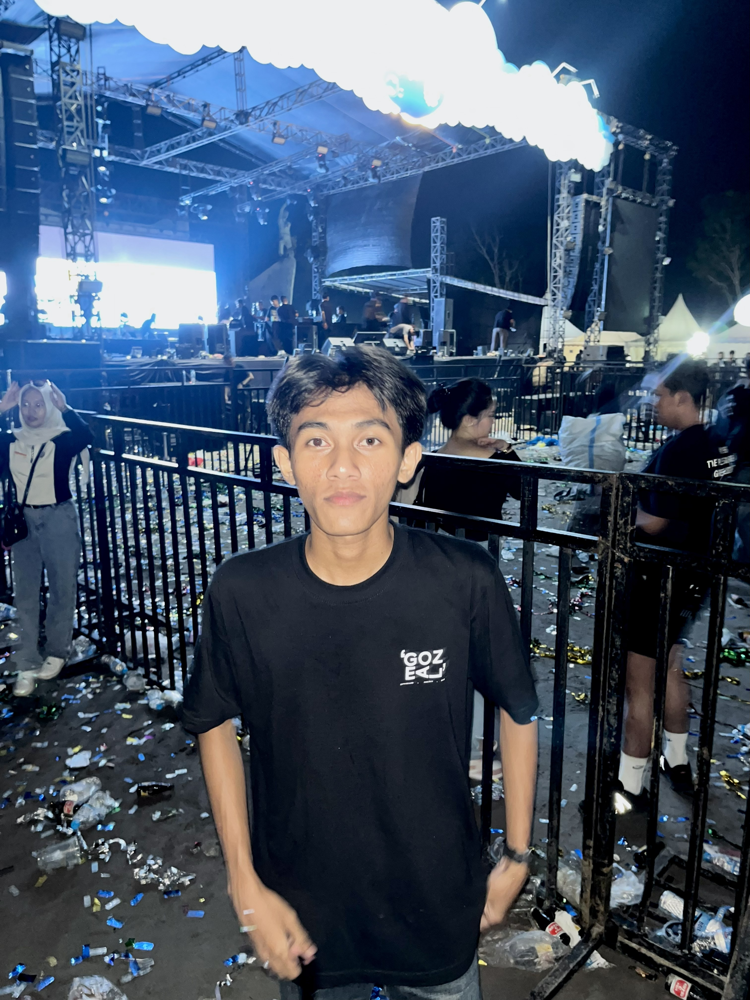
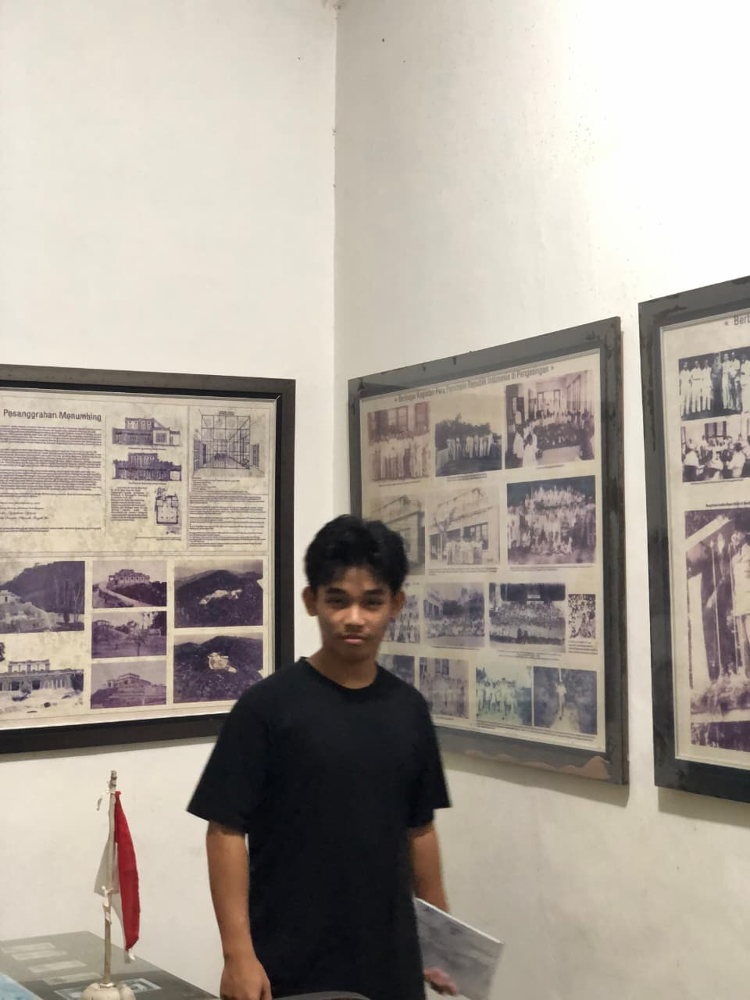

Idhar Zahwan
Tessar Febriansyah
M Fathir

Ayo Mengenal dan Belajar Bersama!
Pohon (tree) adalah graf tak berarah yang terhubung dan tidak memiliki sirkuit sederhana.
Berikut ini ilustrasinya:
G1 dan G2 merupakan pohon karena tidak memiliki sirkuit sederhana dan memenuhi sifat connected serta acyclic.
Kenapa G3 dan G4 bukan pohon?
Karena G3 dan G4 memiliki siklus, sehingga melanggar aturan acyclic yang menjadi syarat utama sebuah tree.
Teorema 1 : Sebuah graf merupakan pohon jika dan hanya jika setiap simpul pada graf tersebut dihubungkan oleh sebuah lintasan sederhana yang unik (tunggal).
Teorema 2 : Suatu sisi pada graf G dikatakan jembatan (bridge) apabila penghapusan sisi tersebut menyebabkan G menjadi tak terhubung.
Teorema 3 : Sebuah graf merupakan pohon jika dan hanya jika setiap sisi pada graf tersebut merupakan jembatan
Hutan (forest) adalah graf tak berarah yang tidak memiliki sirkuit sederhana. Hutan dapat memuat beberapa pohon.